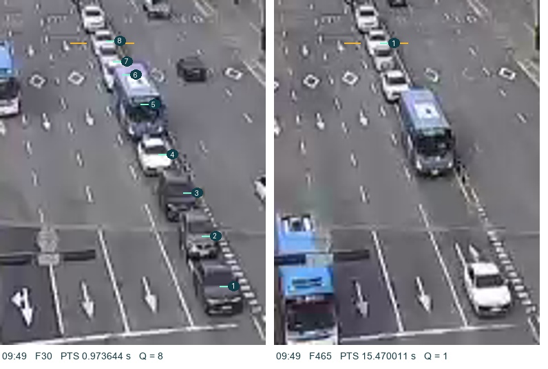

화면 위쪽에서 정지선으로 들어오는 네 차로 중 맨 오른쪽, 신천고가 쪽 중앙분리대 옆 차로를 보세요. 두 영상에서 같은 범위에 멈춰 있는 차량을 셌습니다.
앞선 관측의 마지막 영상
09:49 수신 · 같은 고정 카메라
시작 8대 → 14.5초 뒤 1대
09:49에 센 차량 확대

영상별 정차 대수
| 원본 수신 시각 (KST) | 시작 정차 | 14.5초 뒤 정차 | 예측 − 실측 | 영상 위치 |
|---|
정차 차량을 센 기준
신호가 바뀐 순간과 차량 통과
| 원본 · 재생 위치 | 관측 방향 | 영상에서 확인한 내용 |
|---|
신천로 쪽 중앙선 옆 한 차로
| 수신 시각 | 15초간 실제 통과 | 영상 전체 실제 통과 |
|---|
장면별 신호와 판독 근거
저장한 영상과 관측 기록
전체 열람 기록과 중복 영상
| 뷰어 열람 (KST) | 수신 완료 | 재생 종료 | 대표 파일 | 중복 여부 |
|---|